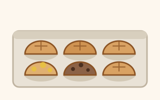

Dried flakes, passed hand to hand. Here is how to wake them up.
One batch of dough, twelve small loaves, and as many different flavours as you fancy. More crust per bite than a big loaf, and the best way to test a flavour idea before committing a whole bake to it.
Needs active starterCollected

Because a flavour idea that turns out badly costs you two rolls instead of a whole loaf you then have to eat for a week. Make a tray, try five things at once, and only commit a full loaf to the ones that earned it.
| Ingredient | Amount |
|---|---|
| Bread flour | 600 g |
| Water | 420 g |
| Active starter, at peak | 120 g |
| Fine sea salt | 13 g |
Makes about 1.15 kg of dough — twelve loaves of roughly 95 g, or eight larger rolls of about 140 g.
| Time | What |
|---|---|
| 6.00 pm | Whisk starter into water, add flour and salt, mix |
| 6.30 pm | Stretch and fold, set 1 |
| 7.00 pm | Set 2 |
| 7.30 pm | Set 3 |
| 7.30–10.30 pm | Bulk ferment until puffy, jiggly and bubbled |
| 10.30 pm | Divide, add flavourings, shape into tight balls |
| 11.00 pm | Into a greased muffin tin, covered, into the fridge |
| Next day | Bake straight from the fridge |
A cool kitchen stretches the bulk ferment considerably. Go by the dough, not the clock — see the method.
Amounts are per two rolls, about 190 g of dough.
| Flavour | Add |
|---|---|
| Garlic parmesan | 25 g grated parmesan, ½ tsp garlic powder, 1 tsp chopped parsley |
| Rosemary parmesan | 20 g grated parmesan, 1 tsp chopped rosemary, black pepper |
| Italian herb and cheese | 20 g mozzarella or provolone, 1 tsp mixed dried herbs, a pinch of garlic powder |
| Olive and herb | 30–40 g chopped olives, 1 tsp mixed herbs, a pinch of garlic powder |
| Chocolate | 25 g chocolate chips, 1 tsp cocoa, 1 tbsp soft brown sugar |
How to add them: flatten each piece of dough into a rough rectangle, scatter the flavouring over it, fold it over itself several times to spread it through, then shape into a tight ball.
Clamp a second muffin tin upside down over the first for the first 15 minutes, then uncover and finish. It traps steam exactly the way the lid on a pot does, and you get a crisp shell the whole way round.
Airtight for 2 to 3 days, or frozen. Five to eight minutes at 175 °C brings them back to something very close to fresh.
This one came from a baker I trust and is rewritten here in metric and plain language, but it is still on my own to-bake list. The method is sound; the exact timings are the bit I have not personally checked. Watch the dough rather than the clock, and tell me how it went so I can correct it.